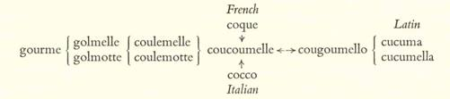
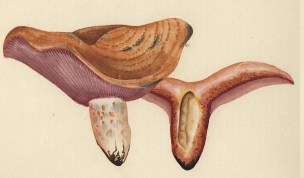
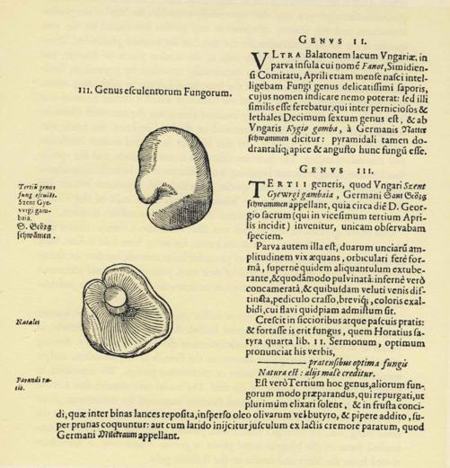

Mycologists sensitive to the fitness of things are the first to admit that their
nomenclature for mushrooms offers a spectacle of unscientific confusion, an ac-
cumulation of infelicities. Scientific names should be keyed to significant aspects
of the organisms that they designate, and there should be uniformity in use.
Instead, many of the scientific names for mushrooms serve only to remind us
of the errors of early mycologists, and any given species is likely to carry two
or more names that are in simultaneous currency in different countries. It even
happens that a single scientific name is commonly employed for different kinds!
(It seems certain, for example, that two of the famous mushrooms, the amanita
muscaria and the amanita phalloides, are different species in Europe from their
American namesakes and it is perilous to assume that attributes securely estab-
lished for them in one continent hold true across the ocean.)
In formal use, following each name is the surname of the mycologist who de-
scribed it, or perhaps two such names, and so the objectivity that is the proper vir-
tue of science becomes tinctured with the frailty of those who gladly permit their
names to be hitched to a mushroom, perhaps tempted by a vain hope for worldly
immortality, if only in union with a fungus.1
Mycological nomenclature got off to a bad start with Carolus Linnaeus, the
18th century Swedish name-giver. Like Adam he surveyed the living world and
bestowed names on all the flora and fauna, but he seems to have hurried a little
impatiently over the numerous and baffling and humble fungi. He chose to
make use of terms drawn from ancient Greek and Latin, but did not pause to
ascertain their rightful meanings. He misapplied almost every one of them. But
by the weight of his immense prestige, he stamped the old words with his new
meanings, and these are now current the world over. They are current the world
over - save here and there among the peasants of Greece and Italy and France,
where vernacular variants of the words used by their ancestors two thousand
years ago still circulate with their ancient sense, and hold their own against the
new-fangled meanings that prevail in learned circles.
In extenuation of the Linnaean terminology it can be pleaded that the classical
words had already been misused by his precursors, such as Clusius and the
I. In this book we have not capitalized scientific names, thereby wilfully violating accepted practice. Only in
High German are common nouns capitalized, and this German usage disfigures the page with capital letters;
it is not to be encouraged. Scientific names are not proper nouns: they designate congregations of similar
individuals. There is no more reason why 'lycoperdon' should be capitalized than the synonym 'pufifbalT.
UNSCIENTIFIC NOMENCLATURE
Bauhins, and that he merely refined the application of names accepted in scientific
circles since the Renaissance. Even if this be true, we may regret that the great
Linnaeus did not rise to the occasion, and with his papal authority impose a
sound system of names conforming to the classical meanings of the words that
he was using. There was no difficulty about those classical meanings. Before the
century was out, the French mycologist, Jean-Jacques Paulet, in his Traite
des Champignons published in Paris in 1793, was discoursing on the nonsense
of the official nomenclature and elucidating the classical usage.1
Take the Latin boletus, for example. In imperial Rome this was the name of the
superb amanita Caesarea, that yellow-capped gilled mushroom which was the
favorite of emperors and epicures. It was undoubtedly borrowed from the
Greek βωλίτης which in turn was derived from βῶλος, meaning a clod of earth.
Mushrooms smell and sometimes look like earthy excrescences, and in boletus
we discover another of the basic metaphors used in the fungal world, of which
we have already identified many others. The same figure underlies the famous
Russian gruzd', a derivative of gruda, meaning 'clod'. The Greek term must
have been pejorative, but when fashionable Rome took to mycophagy, boletus
acquired an aura of excellence that survives to this day. Caesar's boletus is said
to be still called thefongo bolado or bole around Verona, and boule in some parts
of Provence. Bolet is the general term for fungi, especially those with gills,
among the mycophilic Catalans. When the Germans needed a new and favor-
able word to make mushrooms acceptable on the table, we have seen that they
turned boletus into Pilz; and one of the general words for 'mushroom' in Ru-
manian is burete, with the same etymology.
In the light of this history, it is disappointing that Linnaeus ratified the sever-
ance of that fine old boletus from its ancient moorings, and assigned it to capped
mushrooms with a spongy undersurface. The untutored peasants of the Medi-
terranean lands who still apply the word to gilled mushrooms speak with an
authority derived from far older credentials than the mycologists can show,
and - who knows? - possibly their usage will outlast the new.
The mushrooms that mycologists call 'boleti' were the suilli of the Ro-
mans, the swine-fungi, a name that comes down to us in modern Italy in the
translation porcino (boletus edulis) and pordnello (boletus scaber). The books are
wrong when they explain these names by an alleged fondness among pigs for
the boleti. These are the species that develop a greasy texture suggestive of pork
i. The meanings of the classical words for the fungi have been examined twice by English students: (i) by the
Rev. Wm. Houghton, 'Notices of Fungi in Greek and Latin Authors', in the Annals & Magazine of Natural
History, Series v, vol. 15, Jan. 1885, pp. 22 ff; and (2) by Prof. A. H. R. Buller, 'The Fungus Lore of the Greeks
and Romans', Transactions of the British Mycological Society, vol. v, part I, May 10, 1915, pp. 21 ff.
3 6 5
when cooked in the fresh state; and when dried, they taste like dried meat.
This meatiness explains why they are great favorites among the monks of the
Russian Church in the long fasts. Today these 'swine-fungi' are considered kosher
among the Jews of Eastern Europe, but our friend Professor Uriel Weinreich,
authority on the Ashkenazic culture, reports to us a curious fact. From an infor-
mant of Polotsk he learned that in that area the Jews down to modern times have
regarded the boletus edulis as treyf, or unclean, and have not eaten it. May not
this be a survival of a very old tradition? For the Jews of Russia mostly mi-
grated thither from the West, passing a long stage in Germany on the way, and
the association of these mushrooms with the pig in Italy may well have elimi-
nated them from the diet of Jews.
Reverting now to the mycologists, we find that they have borrowed the
Greek word for truffle, ύδνον, to apply to the wholly different hydnaceae family,
and the Greek word for puffball, πέζις, to apply to the wholly different peziza
group, and the Greek word for the field mushroom, άμανῖται, to apply to the clan
known nowadays as the amanitas. The Latin word for truffle, tuber, alone
survives in its original meaning. No purpose was served by these shifts in mean-
ing: they were merely an evidence of bad classical education and an unscien-
tific carelessness with words.
Another example of this abuse of language is the fate of the Latin word aga-
ricum, the Greek άγαρικόν. Surprising as it may seem, the ancient Romans were
not unfamiliar with the fungi of the region that we call Russia. Today 'aga-
ricus' is the name for the gilled fungi, but it was Linnaeus who imposed this
meaning. The ancients applied the word to the shelf-fungus that grew on the
larch, now known as the femes officinalis, used since ancient times medicinally.
Dioscorides explained for us that the name was taken from the land of Agaria,
lying on the northern shores of what we call the Sea of Azov, there where
mariners would steer their course by Point Agarum, halfway between the mouth
of the River Don and the ragged peduncle by which the Crimean peninsula
hangs from the Continental land-mass. The physicians of Agaria enjoyed renown
in those times, and at the Court of Mithridates the Great some of them were
always in attendance. Probably the medical school of Agaria was the first to
discover the medicinal virtue of the ancient agaricum.
On the shaky foundation of Linnaeus' basic names for the mushrooms, errors
and infelicities have continued to pile up. There is the spring-tide amanita, or
amanita verna, which grows in the autumn. There is the amanita phalloides,
which ought to be 'phallus-like'. Not at all! To explain that name we must look
at another fungus, most distantly related, which does resemble a phallus and
366
PLATE LXXVIII
Jean-Henri Fabre. Lactarius deliciosus Fr. ex Lin.
French: sanguin; Russian: ryzhik.

PLATE LXXIX
Jean-Henri Fabre. Lactarius sanguifluus Fr. ex Paul.
French: vineux; Catalan: rovelU.

UNSCIENTIFIC NOMENCLATURE
which is called the phallus impudicus. Around the base of the stem of the amanita
phalloides there grows a 'cup' that superficially resembles the 'cup' of the phallus
impudicus, and this feature, unrelated to any phallus but shared by the two
species, is the trivial justification for the name of the amanita phalloides! There
is the gyromitra esculenta, widely sold in the market places of Europe, but
whose esculent virtues have been occasionally tarnished by mysterious fatal-
ities. Linnaeus himself bestowed on the lactarius deliciosus its misleading name.
It seems that reports reached him of the esteem in which a certain lactarius was
held in the south of Europe, and he assumed that it was the one with which he
was familiar in Sweden, and so bestowed on the kind he knew the name that
rightfully belonged to another.1 By this blunder he started endless confusion
and misunderstanding. The lactarius deliciosus is not delicious, and the species
that Linnaeus thought he was baptizing is now known as the lactarius sanguifluus,
the rovello of the Catalans, the species on which the Majorcans bestow the
delightful name of exclatasangs, or 'blood-spatterers'. The milk of this kind is
reddish, whereas the so-called lactarius deliciosus yields saffron droplets.
One of the greatest of mycologists was Elias Fries, also a Swede. About him
there is a story to tell that, so far as we know, has never been told before. Men
of learning are sometimes inclined to patronize lesser mortals, but they are them-
selves subject to occupational hazards of their own, pedantic errors and odd mani-
festations of ignorance, and Fries offers us an instructive example of the pedantic
fallacy.
It was in 1601, as we have said on an earlier page, that the Frenchman known
as Carolus Clusius published his great herbal, Rariorum Plantarum Historia, in
which he devoted many pages to descriptions of the fungi of Hungary. Among
others, he discussed the species known to the French as the mousseron, and to
science as the tricholoma gambosum or tricholoma georgii. We reproduce in
facsimile the relevant passage of his text. The reader will observe that Clusius
begins by giving the Hungarian and German names of the mushroom, Szent
Gyewrgi gambaia and Sant Georg schwammen respectively. Both names mean the
same thing, viz., St. George's mushroom, gambaia being the appropriate gram-
matical form of the Magyar word gamba or gomba, 'mushroom', a word bor-
rowed from the Slavs and cousin to the Russian guba.
More than two centuries later, in 1821, Elias Fries published his Sy'sterna My-
cologicum, one of the classics of mycological writing. In it he bestowed on the
species that Clusius had already described the name agaricus gambosus, adding
I. Roger Heim retells the story of the misnaming of the lactarius deliciosus in the Revue de Mycologie, vol.
xv, fasc. 2, July 1950.
367

Fig. 27. EARLIEST DESCRIP 'ION OF TRICHOLOMA GAMBOSUM
by Carolus Clusius, in Rariorum Plantarum Historia,
Antwerp, 1601.
368
UNSCIENTIFIC NOMENCLATURE
the comment that he suspected this was edible because of its odor of fresh flour!
(There speaks the mycophobic Swede.) He thought it was the true agaricus
georgii, as to which there had been much confusion. Here are Fries's words:
Hunc pro vero A. Georgii, quo nil magis confusum,
et ob odorem farinse recentis edulem suspicor.
Fries did not explain his use of gambosus, but he referred to the very passage
in Clusius that we have reproduced, and therefore it was not at all surprising
when, in 1827, a learned confrere, Kurt Sprengel, in editing the i6th edition
of Linnaeus' Sy sterna Vegetabilium, retained the older name, agaricus georgii, and
then added, again in Latin, a slighting reference to Fries's term, saying that it
was derived from the Hungarian word in Clusius and that it was an unhappy
choice; which indeed it was.
In the following year, 1828, Fries gave vent to his pique at this reprimand in
his Elenchus Fungomm. Again using Latin, he said that Sprengel, 'most learned in
botanical literature', was mistaken in tracing the excellent name, agaricus gam-
bosus, to the Hungarian gambaia, which he had never thought nor even heard of.
Instead, the nature of the mushroom had inspired him to borrow from the Latin
author Vegetius the word gamba!
This was a most unwise assertion for the great Fries to make. Despite his asser-
tion to the contrary, he was, as his text had expressly said, familiar with Clusius.
He had clearly misread Clusius, construing gambaia as a specific name rather
than the Magyar word for 'mushroom'. When challenged, he took refuge in a
late Latin writer's use of gamba, which in Vegetius, as we have seen, meant a
swelling on the hock of a horse. Certainly no one, not even a Swedish mycologist,
would associate by first intention the lovely mousseron with a swelling on the
hock of a horse! Nor even with a hoof of a horse, which is an alternative mean-
ing. By devising the name 'agaricus gambosus', Fries unwittingly was describ-
ing the mousseron as of the genus 'agaricus', species 'fungus'.
By reason of Fries's error, the mycologists have inherited, apparently in per-
petuity, an absurd scientific name for the simple mousseron, a name that survives
in the modern 'tricholoma gambosum'. If, as we argued on an earlier page, the
word gamba in Vegetius was a borrowing from the barbarians of Central and
Eastern Europe, then that was the same gamba that appears in Clusius, and Fries
did not advance his cause in the slightest by digging up the writings of the Roman
veterinary.
How refreshing it is to turn from the unhappy nomenclature of the myco-
logists to the genuine words devised over the ages by humble peoples! Some
369
of these hide their secret meanings successfully, such as mizcalo in Spanish, and
the generic word for mushrooms in Romany, x or xuxur. To illustrate the
complexity of the problems presented by popular mushroom names, we shall
cite the case of the delectable mushroom known to science as the tricho-loma
equestre, which in the mushroom world holds the rare distinction of growing
in sand. It enjoys great renown along the coast of the Landes, in Gascony, under the
name bidaou. Some miles to the east, in the sauterne country around Podensac,
this same mushroom, highly esteemed, is the pied d'ane, or ass's hoof. In the
neighboring region of Entre-deux-mers, famous among wine-lovers, it is the
Catalan, a name used elsewhere in the Gironde for the lactarius deliciosus. Beyond
the Dordogne around St. Andre de Cubzac, it becomes the jaunisson. Nearby, in
the canton of Cavignac, where the langue d'oil is spoken, our tricho-loma
equestre is known as the bourseau, from a local word meaning to swell or
distend. Thus here in an area of France that could be covered by a pocket
handkerchief, so to speak, a single species of mushroom, well known to everyone,
bears five distinct names.
Wherever the latent metaphor in a popular name for a mushroom can be
deciphered, it is invariably accurate in observation and true in feeling. In the
course of these pages we have uncovered many of these inner meanings, but
there has been no occasion to refer to some of the best. Take the curious case
of the cantharellus cibarius. No one has discovered the name for it in ancient
times, but since it carries today more names by far than any other wild mushroom
of Europe, we must suppose that it was known to our remote ancestors also.
In most of the Slavic countries its name is keyed to the fox, e. g., the Russian
lisichki, 'little foxes', and the Hungarians translated this to arrive at their roka-
gomba. The Lithuanian lapelaizis means the 'fox-licked one': foxes like squirrels
are great mycophages. In Old Czech of the i4th century we find the term lisa
huba, 'fox's mushroom'. The Bulgarians use an expression that is wholly their
own, pachi kraka, the 'duck's foot', a happy figure of speech, as will be perceived
by any mycophile who recalls the color and shape of the webbed foot of a duck,
idly suspended in air or water.
The German Pfifferling or 'peppery one' is an inappropriate changeling. This
name rightly belonged to the lactarius piperatus, as we can prove by the descrip-
tion of it given in the Adnotationes of Valerius Cordus in the I53o's:
Sunt enim quidam Piperis sapore et lacteo liquore manant. Hos
German! Pffferlinge vocant.
For there are some with the taste of pepper, and they flow with a
milky fluid. These the Germans call Pfifferlinge.
370
UNSCIENTIFIC NOMENCLATURE
Two centuries earlier Konrad von Megenberg in his Das Buck der Natur also
speaks of the Pfifferling, which he says is of questionable edibility. It seems that
when the Germans began to take to mycophagy, they appropriated an existing
name of another mushroom to apply to the cantharellus cibarius, a small mush-
room that all true mycophiles hold in modest esteem; wherefore in time the
German name acquired a secondary meaning, to designate anything trivial,
and in this sense the German word turns up in French in a single expression:
cela ne vaut pas un fifrelin.1 In Austria our little chanterelle is the Eierschwamm,
suggestive of the scrambled eggs that these mushrooms resemble and with
which in Austria they are often prepared.
Of the many names for the cantharellus cibarius in France, the girolle and the
chanterelle are the most widely known. The French philologists Oscar Bloch
and Albert Dauzat both assert that chanterelle entered the French language in
the middle of the 18th century, and that it was taken from the scientific name
bestowed on the mushroom by Linnaeus - 'cantharellus' - which in turn (accord-
ing to the French philologists) he devised from a Latin word cantharella, a little
cup. This etymology is prima facie suspect, for popular names bestowed on
mushrooms by French peasants are not normally derived from learned terms of
Linnaean inspiration. In fact, the philologists are mistaken. Jean Bauhin in his
great Historia Plantarum Universalis, published in 1650-1 and written a half century
earlier, reported that chanterelle was in his time the popular name of the mushroom
around Montbeliard, in the east of France. Clearly the mycologists Latinized
the word as they found it. Chanterelle is a name of popular inspiration descended
from the Latin diminutive cantharulus, formed from canthams, which in turn was
borrowed from the Greek κάνθάρος, drinking cup. Possibly there is collateral
evidence of this origin in a word that survives in the archaic Spanish spoken in
Jocotan, Guatemala -canturula, the name of an ear-shaped fungus that grows on
old trees.2 Words that circulate chiefly on the tongues of humble people undergo
subtle pressures and transformations, being re-shaped to conform to punning
suggestions and metaphorical associations. Perhaps there is evidence of this in
chanterelle. This little mushroom in Italian is the gallinaccio, 'turkey-cock'. In
Dutch it is the hanekarn, 'cock's comb', though Dutchmen, being mostly myco-
phobes, often know not the word in this sense. The Dutch and Italian words
suggest the masculinity of the cock. In Catalan the chanterelle is the rossinyol:
1. The mushroom seems to have been widely used as a symbol of worthlessness. We have seen that the English
'trifle' was a truffle, the word having been borrowed long before the truffle rose to its present heights in social
esteem and market value. Juan Corominas in his note on the Spanish seta points out that it has carried the
same metaphoric meaning.
2. See Lisandro Sandoval's Semdntica Guatemalense o Diaionario de Guatemalteqitismos, Guatemala, April 1941.
this is said to be derived from ros, rossa, an adjective that describes to a nicety
the red-gold color of the lovely mushroom. But rossinyol also means 'nightingale',
and it happens that, just as the dove or paloma is the symbol of the beloved in
French and Spanish popular tradition, the nightingale is the symbol of the
lover.1 In Bulgaria, as we have seen, the chanterelle is linked with the drake.
These ornithological ties, always masculine, are curious. Does not chanterelle
itself suggest singing and chantecler? Are we not in the presence of an eruption,
subtle and unconscious, of the old erotic theme, by way of the cock's comb,
the gobbler's wattles, the crowing chanticleer, the virile rossinyol? If our surmise
be right, confirmation must be sought, not in the sophisticated ratiocinations of
scholars, but rather in the emotional associations of the untutored folk when
they use their homely words for the little yellow mushroom. If our surmise
be right, the deep-seated eroticism of the fungal consciousness of Europe is
erupting again, before our eyes, in the words born of popular fancy or reshaped
by popular pressure to designate the cantharellus cibarius. Like murder, the
shameless μύκης will out. Our straws of evidence permit us to discern the erotic
theme as through a glass, darkly. How pleasing it is for us, then, our surmise
having been formulated, to discover corroboration for it in eastern Europe. In
the Latvian language the name of the cantharellus cibarius isgailene, derived im-
mediately from gailis, 'cock', a word that is kin to the Latin gallus.
The alternative word in French for the chanterelle isgirolle. French philologists
seem satisfied that this word shares the same root as 'gyrate', but there is no
evidence for this. Girolle is a borrowing from Provencal, where the name is
current in many variations extending over the langue d'oc area of France and
throughout Catalonia and the Balearic Islands. Jirgola in Majorca corresponds
to girbola in Catalan, and in Frederic Mistral's Proven9al dictionary we find
the word in myriad forms. No other mushroom anywhere seems to possess
so many names, of which here are the ones we have collected:
biroudelo escrabilho girbouleto jargouleto
bouchinguello gerilho
girello
jirboulelo
caramillo ghidorelo girgouleto jotrel
crahilho ghirolou girgoulo ziraoudela
escarabiho giraudello iredela
zitello
Here we leave an enigma for ethno-mycologists to apply themselves to - in an
area unsurpassed for mycophagy, an important mushroom parades an unrivalled
i. See Wm. J. Entwistle's comments on El Conde Olinos in Romance Philology, vol. vil, No. I, Aug. 1953, p. 13.
3 7 2
UNSCIENTIFIC NOMENCLATURE
diversity of interrelated popular names, all of unknown meaning and all reduced
in French to the lovely but deceptively simple girolle.
So much for the chanterelles. In Swiss German the clavaria or coral mushroom
is known as the Ziegenbart, or goat's beard, which is a good metaphor, but it
is topped, we think, by the happiest name in all of Europe's mushroom voca-
bulary, the Catalan word for the same fungus, which is pens de rata, or rat's
paws. The soft, marvelously fine articulation of the paws of a rat are the perfect
analogy for the corresponding extremities of the coral mushroom, and in
this mushroomic name we possess a supreme example of the perception of
peasants.
Sometimes the mycologists have paid obeisance to popular terminology. For
example, the name of the puffball, lycoperdon, is a learned back-formation to
a non-existent Greek term that would mean 'wolf's flatus'. How much better
it would have been to use the genuine Greek name for the same fungus, πέζις ,
which harbors the same indelicate idea!
It might be thought that the mycologists of the world, being a relatively small
group, could agree together to wipe the slate clean and begin anew, giving no
hostages to vested interests, and devise a system of solidly grounded mushroomic
names. But such reforms seem beyond the capacity of men, even scientists, and
perhaps this is just as well. A nomenclature that is encumbered with barbarisms,
pedantic fallacies, and infelicities is a perpetual and humbling reminder that scien-
tists themselves are ordinary clay, even when they are cultivating their own
garden.